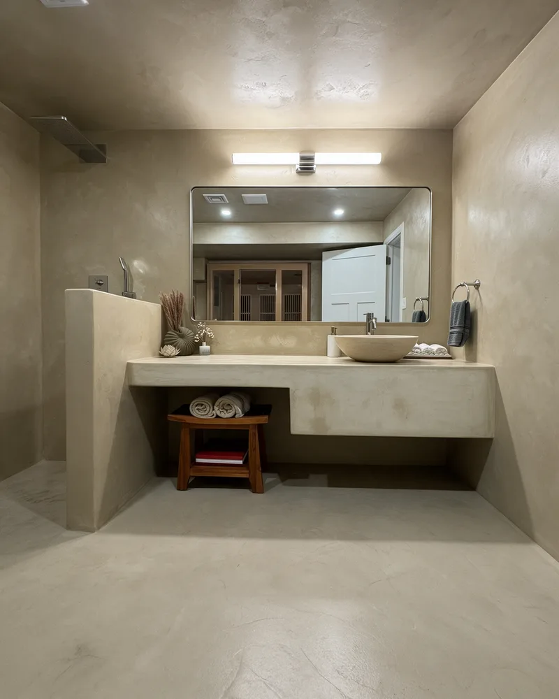
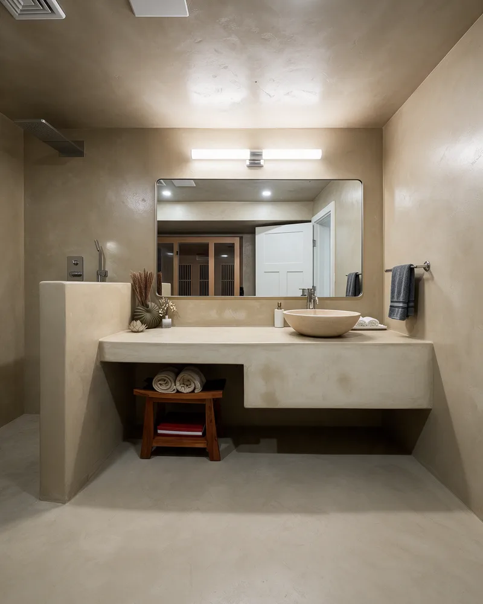
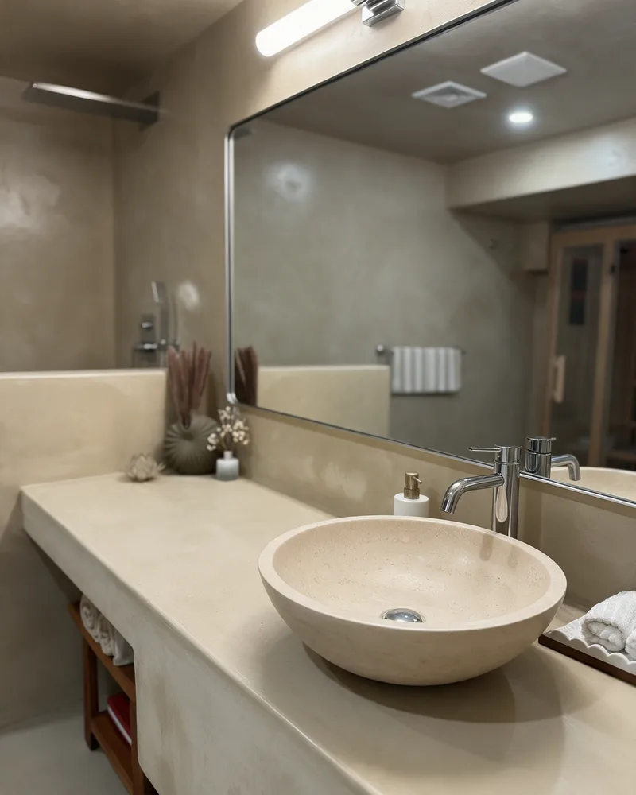

Microcement is a thin, cement-based coating made of cement, very fine aggregates, polymers and pigment, applied by hand in several thin layers (usually about two to three millimeters in total) and then sealed. Because it is so thin and bonds to almost any sound, stable surface, it can cover floors, walls, showers, vanities and shelves in one continuous finish with no grout lines, often without tearing out what is already there.
That is the short answer. The longer answer, which is what this guide is for, explains what microcement is really made of, how a professional system is built layer by layer, where it performs beautifully and where it does not, what drives the price, how it compares with tile, polished concrete, tadelakt and Venetian plaster, and how to keep it looking good in a New England home. We install microcement across Greater Boston from our base in Malden, and everything below comes from what we see on real jobs: the prep that makes a surface last, and the shortcuts that make it fail.
So, what is microcement?
Think of microcement as a decorative skin rather than a structural material. A concrete slab holds weight. Microcement does not. It is a coating that sits on top of something that already holds weight (a floor, a wall, a tiled shower, a cabinet box) and gives it a new, seamless face.
The material starts as a very fine cementitious powder. It is mixed with water or with a liquid polymer, depending on the system, and troweled on in thin passes. Each pass is pressed and smoothed by hand, so the surface ends up with subtle movement in tone, a little like stone or a soft concrete. Once the coats have cured, a sealer goes on top. The sealer is what turns a porous mineral surface into one that resists water, stains and daily wear.
Three things make microcement different from most finishes people know:
- It is continuous. There are no tile joints, no grout lines and no visible seams between the floor, the wall and the shelf. The eye reads the room as one calm surface.
- It is thin. At a few millimeters, it barely changes floor heights or wall depths, so doors, trim and fixtures usually stay where they are.
- It bonds to existing surfaces. With the right primer, it can go over sound tile, concrete, plaster, cement board or drywall in the right locations, which is why it is popular for renovations where demolition would be messy or expensive.
What microcement is not: it is not a paint, it is not a self-leveling floor compound, and it is not a magic fix for a substrate that moves, cracks or holds water. The coating is only as good as what it sits on, a theme that comes up again and again in this guide.
Microcement, micro cement and microconcrete: are they the same thing?
Mostly, yes. You will see the same finish written as "microcement", "micro cement", "micro-cement" and sometimes "microconcrete" or "micro concrete". The spelling varies by manufacturer, by country and by whoever wrote the product sheet. Homeowners searching for micro cement and designers specifying microcement are usually talking about the same family of thin, troweled, cement-based coatings.
There are a few nuances worth knowing:
- Microconcrete is sometimes used for slightly coarser base layers or for systems marketed mainly for floors. Some manufacturers use the word for their whole range.
- Microtopping is a term more common in the concrete industry for thin overlays on slabs. It overlaps with microcement, though microtoppings are often sprayed or squeegeed rather than hand troweled for a decorative look.
- Cement plaster or skim coat is a different thing. A cement skim coat is a leveling layer, not a decorative sealed finish.
The practical takeaway: do not choose an installer by the word they use. Ask what system they install, how many coats, what reinforcement goes underneath, and what sealer finishes it. Those answers tell you far more than the spelling.
What is poly microcement?
"Poly microcement" is a phrase that shows up more and more in searches and on product listings. In general it refers to polymer-modified microcement: a microcement where polymers (typically acrylic or similar resins) are part of the mix to improve flexibility, adhesion and resistance to cracking. It is a description of a type of material, not one specific brand.
The easiest way to understand it is to look at how microcement systems are packaged:
One-component systems
In a one-component system, the polymer is already blended into the dry powder. On site, the installer adds water and mixes. These systems are convenient and consistent, because there is less room for mixing errors. Many products sold as ready-to-use kits work this way.
Two-component systems
In a two-component system, the powder comes in one container and a liquid polymer resin comes in another. The installer mixes the two in set proportions. Because the liquid resin carries the polymer, these systems can offer strong bonding and flexibility, and the installer has some control over the mix for each layer. They also demand more care: the ratio has to be right every time, or color and performance can vary from batch to batch.
When someone says poly microcement, they usually mean a polymer-rich system of either type, often the two-component kind. Almost every modern microcement contains polymer in some form, so the label alone is not a guarantee of quality. What matters is that the system is designed for where it is going (a shower floor and a living room wall are not the same exposure) and that it is applied and sealed as the manufacturer intends.
What microcement is made of: the layer system
A finished microcement surface looks like one thing, but it is really a stack of layers, each with a job. Skipping or thinning any of them is where most failures start. Here is the typical build, from the bottom up.
| Layer | What it does | What goes wrong if it is skipped |
|---|---|---|
| Substrate prep | Cleans, repairs, levels and stabilizes the surface underneath | Cracks, hollow spots and telegraphing of old joints |
| Primer | Creates a bond between the substrate and the first coat, and controls suction | Delamination, bubbles, uneven drying |
| Reinforcing mesh | Fiberglass mesh embedded in the base to spread stress across joints and corners | Hairline cracks along board seams, tile joints and transitions |
| Base coats | Thicker, slightly coarser layers that build body and strength | A weak, thin surface that chips or wears through |
| Finish coats | Very fine layers that create the final color, texture and smoothness | A rough, patchy look and poor sealer performance |
| Sealer | Protects against water, stains and abrasion (often polyurethane in wet areas) | Dark water marks, stains, dull traffic paths |
The substrate
Before any microcement goes on, the surface underneath has to be clean, dry, sound and stable. On tile, that means checking for hollow or loose tiles. On boards, it means tight fastening and taped joints. On concrete, it means no dust, no curing compounds and no active cracks. We also look for movement (flex in a floor, a wall that gives when you press it) and for signs of water behind the wall, because no coating can fix those.
Primers
Different surfaces need different primers. Glossy tile needs a primer that grips a non-porous surface. Thirsty concrete or plaster needs one that controls how fast it pulls water out of the first coat. Using the wrong primer, or none, is one of the most common shortcuts in cheap installations.
Mesh
Fiberglass mesh is pressed into the first base coat. It acts like a skeleton, holding the layers together across board seams, tile joints, corners and changes of plane. On walls with joints and on most floors, we treat mesh as essential rather than optional.
Base and finish coats
Base coats build thickness and strength. Finish coats use a finer powder for a smooth, refined surface. The number of coats depends on the system, the area and the look you want, and there is light sanding between some coats to remove ridges and trowel marks.
Sealer
Cement on its own is porous. The sealer is what makes microcement practical in a bathroom or kitchen. In wet areas we use a polyurethane sealer rated for wet areas, applied in multiple thin coats. Sealers come in matte, satin and gloss looks, and the choice changes how the surface feels and how visible water spots and scratches are.
How microcement is applied, step by step
Every system has its own rules, but a professional microcement installation generally follows the same sequence. Knowing it helps you understand why a quality job takes days, not hours.
- Site visit and assessment. We look at the surfaces, tap tile to find hollow spots, check for flex, ask about any past leaks, and talk about how the space is used. This is also when we discuss color, texture and sheen.
- Protection. Floors, fixtures, cabinets and adjacent rooms are masked and covered. Microcement involves mixing, troweling and sanding, so dust control matters.
- Substrate repair. Loose tiles are removed and filled, cracks are treated, low spots are leveled, and joints are taped. On new construction, boards are installed and fastened to suit the system.
- Waterproofing where needed. In showers and wet zones, a waterproofing membrane is part of the build underneath the microcement. The microcement and sealer protect the surface; the membrane protects the structure.
- Priming. The correct primer is rolled or brushed on and allowed to dry as specified.
- First base coat with mesh. The base coat is troweled on and the fiberglass mesh is embedded into it, overlapping at seams and wrapping corners.
- Second base coat. Once cured, a second base coat covers the mesh and builds body. Light sanding removes ridges.
- Finish coats. Fine finish coats go on, usually two, troweled for the chosen texture. This is where the hand of the installer shows most.
- Sanding and cleaning. The surface is sanded smooth where appropriate and thoroughly cleaned of dust before sealing.
- Sealing. Several thin coats of sealer are applied, with drying time between each.
- Cure before use. The sealer needs time to cure before heavy use, especially water exposure in showers and heavy furniture on floors.
Each step has drying or curing time attached, and those times depend on temperature, humidity and airflow. This is why we never promise a finish in a single day, and why we are wary of anyone who does.
Where microcement works best
Microcement shines in places where a seamless, low-profile surface solves a real problem or creates a look that tile and paint cannot.
- Bathrooms and showers. No grout to scrub, no joints to stain, one surface from floor to ceiling. This is where most of our microcement work happens.
- Floors in living areas. A continuous floor that flows between rooms without thresholds, compatible with radiant heat when installed correctly.
- Vanities, built-in shelves and niches. Microcement can wrap a vanity, a floating shelf or a shower niche so it looks carved from the same material as the wall.
- Feature walls and fireplace surrounds. A tactile, mineral finish with soft tonal movement.
- Kitchen backsplashes and some counters. Possible with the right sealer and realistic expectations about heat and sharp impacts.
- Renovations over existing tile. When the tile is sound and well bonded, microcement can transform a dated room with much less demolition.
It is less suited to surfaces that move a lot, to exterior areas exposed to freeze and thaw without a system designed for it, and to commercial floors with very heavy rolling loads unless the system is specified for that. Microcement is also not the best choice if you want a perfectly uniform, flat color with zero variation; the hand-troweled character is part of what you are buying.
Microcement for showers: what makes it work
A microcement shower is the project most people picture when they discover the material, and with good reason. A shower without grout lines is easier to clean, has no joints to crack or grow mildew, and looks quietly luxurious. But a shower is also the toughest exposure in the house: water every day, steam, soap, hard water minerals and constant temperature changes. Using microcement for shower walls and floors works well only when the whole system is designed for that environment.
The waterproofing comes first
The most important thing to understand is that microcement and sealer protect the surface, but they should not be the only line of defense for the structure. In a shower, there needs to be a proper waterproofing layer behind or beneath the finish, correctly detailed at the drain, the corners, the valve, the niche and the curb or threshold. If water ever gets past the surface (through a hairline crack, a worn sealer or a gap at a fixture), the membrane keeps it from soaking into the framing.
Slope and drainage
Microcement follows the shape of what is underneath it. It does not create slope by itself. A shower floor must be pitched correctly to the drain before the coating goes on, or water will sit in low spots, leave mineral rings and wear the sealer faster. Curbless showers, like the one in the project photos below, need especially careful planning so water stays inside the shower area.
Corners, niches and fixtures
Inside corners, the edges of a niche, the joint between floor and wall, and the area around the valve and shower head are stress points. We reinforce them with mesh and pay close attention to how the coats wrap each edge. A clean, slightly softened corner is both more beautiful and more durable than a razor-sharp one.
The sealer in a wet area
In showers we use a polyurethane sealer rated for wet areas, applied in several coats. It resists water, soap and the light abrasion of daily cleaning. It is not a forever coating; in a well-used shower it should be inspected and refreshed every few years, which is a simple maintenance step compared with regrouting tile.
So, is microcement good for a shower? Yes, when the substrate is stable, the waterproofing is right, the floor is sloped, the corners are reinforced and the sealer is suited to wet areas. It is a poor choice when any of those are skipped, which is why the quality of the installer matters more in a shower than anywhere else.
A microcement bathroom: walls, floor and vanity in one surface
A full microcement bathroom takes the idea one step further: the floor, the walls, the shower, the vanity and even built-in shelves all share the same finish. The room stops looking like a collection of materials and starts looking like one sculpted space.
Here is a real example from our own work. In this bathroom, the walls, the floor and the built-in shelving were all finished in microcement. The shelves were formed into the wall next to the glass shower and coated in the same material, so the corners stay clean and easy to wipe down, and there is not a grout line anywhere in the room.



We used the same system in a full bathroom in Newburyport, Massachusetts, starting from prepared boards and finishing with a continuous surface on the walls, the vanity and the floor. On both jobs, the coats went on over mesh and were sealed with a polyurethane sealer rated for wet areas. That combination is what separates a microcement shower that still looks good years later from one that stains in its first year.
Why the vanity is a great candidate
A microcement vanity, especially with a vessel sink like the one above, keeps the material story going from wall to countertop. The top needs the same care as a shower: correct substrate, reinforcement at the edges, and a sealer that handles standing water, toothpaste, soap and cosmetics. Edges get rounded slightly so they resist chips from everyday knocks.
Planning a whole room
When an entire bathroom is going to be microcement, we plan the order of work so each surface can cure without being walked on or splashed. Usually walls come first, then the vanity and shelves, then the floor, so you are never working above a fresh floor. Fixtures are typically installed after the sealer has cured, or carefully protected if they stay in place.
Microcement floors and microcement flooring
A microcement floor gives you a seamless, low-profile surface that flows from room to room without thresholds or grout. It is popular in kitchens, entryways, living areas and basements that have been finished, and it pairs naturally with modern, minimal interiors as well as warmer, more rustic ones depending on color and sheen.
What a floor needs underneath
Floors carry weight, foot traffic, furniture and the occasional dropped pan. A microcement floor starts with a stable, rigid base. Concrete slabs are usually good candidates once they are clean and any cracks are addressed. Wood subfloors need to be stiff enough not to flex between joists, which sometimes means adding a layer of suitable board. Existing tile can work if it is well bonded and not hollow.
Floor-specific details
- Movement joints. Structural or control joints in a slab need to be respected. Bridging a moving joint with a rigid coating invites a crack in the same line.
- Thresholds and transitions. Where microcement meets wood, carpet or stone, we plan a clean edge detail so the thin coating is not exposed to chipping.
- Sealer for traffic. A floor sealer has to resist abrasion from shoes and furniture legs. Matte and satin finishes hide fine scratches better than gloss.
- Furniture protection. Felt pads on chairs and tables help the sealer last much longer.
How microcement flooring feels to live with
Microcement flooring feels solid and smooth underfoot, a little warmer than tile and a little less forgiving than wood. On its own it can feel cool in winter, which is one reason many people combine it with radiant heat. It is quiet compared with large-format tile, easy to sweep and mop, and has no grout to collect dirt. It will show some patina over time, which many owners come to like.
Microcement in kitchens
Kitchens are a natural fit for microcement floors and backsplashes, and a possible but more demanding fit for countertops.
- Floors. A seamless kitchen floor is easy to clean and lets an eat-in kitchen flow into the next room. Sealer choice matters because of spills, grease and dropped utensils.
- Backsplashes. A microcement backsplash removes grout lines behind the cooktop and sink, which is where grout gets dirty fastest. Behind a range, we discuss heat exposure and cleaning habits before choosing the sealer.
- Countertops. Microcement over a rigid, well-supported base can make a striking counter, but it is a coating, not a slab. It does not like hot pans set directly on it, knives used directly on it, or acidic spills left to sit. With trivets, cutting boards and quick cleanup, it can work. If you want a work surface you never have to think about, a solid stone or quartz counter may suit you better.
- Islands and cabinet faces. Wrapping an island base in microcement creates a sculptural, monolithic look and avoids most of the wear a countertop gets.
Can microcement go over tile?
Yes, and this is one of the biggest reasons people choose it. Microcement can go over sound tile, which can save a great deal of demolition, dust and disposal in a bathroom or kitchen. The key word is "sound".
Before we coat over tile, we check:
- Hollow tiles. We tap the surface to find tiles that sound hollow. Those are loose or poorly bonded and must be removed and the void filled. A hollow tile under microcement will eventually crack the coating.
- Flex. If the floor or wall gives under pressure, the tile may be fine today but the structure underneath is moving. Microcement will not hide that.
- Water behind the wall. Stained grout, soft spots, peeling paint nearby or a musty smell can point to a leak. Covering a wet wall traps the problem.
- Cracked tiles and grout. Cracks that follow a line often mean movement beneath. We find out why before covering them.
- Glossy glaze and cleanliness. Glazed tile is cleaned and degreased thoroughly, and a primer designed for non-porous surfaces is used.
Grout lines are filled and leveled so they do not telegraph through the thin coating, and mesh is embedded across the whole area to bridge the old joints. Done this way, a dated tiled bathroom can become a seamless microcement bathroom without stripping it to the studs. If the tile fails any of the checks above, removing it is the honest recommendation.
Microcement over drywall, plaster, plywood and concrete
Microcement bonds to many substrates, but each has its own rules.
As a quick guide: concrete and cement board are the most reliable bases, sound tile works well with the right prep, plaster and drywall are suited to dry areas, and wood needs to be made rigid first. Drywall is never a shower substrate.
Drywall
On a dry wall such as a living room feature wall or a powder room, microcement can go over well-installed drywall with the right primer and mesh at the joints. In a shower or any area that gets wet regularly, drywall is not an appropriate base, no matter how good the coating is. Water that reaches the paper face of drywall causes swelling and failure.
Plaster
Many older Greater Boston homes have plaster walls. Sound plaster can be a good base for microcement in dry areas. Loose, cracked or delaminating plaster has to be repaired first, which is work we do regularly as plasterers. We have written separately about finishing plaster over drywall in our guide on Venetian plaster over drywall, and many of the same prep principles apply.
Plywood and wood
Wood moves with humidity, and microcement does not like movement. Over a wood subfloor, we usually want an additional rigid layer, firmly fastened, before coating. Wood cabinet boxes for a vanity need to be stable and well built, and edges are reinforced.
Concrete
Concrete is a natural partner. The main concerns are moisture coming up through a slab (common in basements), existing cracks, and contraction joints. We check, treat and plan around each.
Microcement and underfloor heating
Microcement and radiant floor heating work well together. Because the coating is thin and mineral, heat passes through it efficiently, and the floor warms evenly without the cold spots you sometimes get under thick tile assemblies. In a New England bathroom or kitchen, a heated microcement floor is one of the most comfortable surfaces you can stand on in January.
There are rules, though:
- The heating system must be commissioned first. A new heated slab or screed needs to be dried and the heat run through a gradual cycle before coating, so moisture and initial movement are out of the way.
- Heat off during application. The heat is turned off or set low while the coats go on and cure, then brought up gradually afterward.
- Gradual temperature changes. Sudden jumps in floor temperature put stress on any rigid finish. Raising and lowering the heat gradually is kinder to the coating.
- Mesh is especially important. Heat cycles mean expansion and contraction, and reinforcement helps the layers move together.
Electric mat systems can also be used under microcement when embedded in a suitable leveling layer first. The exact approach depends on the heating system, so we coordinate with whoever installs it.
Is microcement waterproof?
This is the question we hear most, and the honest answer has two parts.
Sealed microcement is water-resistant. With a proper sealer, the surface sheds water, resists staining and can handle daily showers. Water beads and wipes off. That is why it works in bathrooms.
The system is what makes a shower waterproof. Cement itself is porous. If the sealer wears thin or is damaged, water can be absorbed into the coating and show as dark patches. That is why, in a shower or wet room, we build a waterproofing membrane into the assembly underneath, and why we refresh the sealer over time. Think of it the way you think of tile: tile and grout are not waterproof on their own either; the membrane behind them is what protects the house.
So when someone advertises microcement as "100% waterproof" with no mention of membranes, slope or sealer maintenance, be cautious. Microcement is an excellent wet-area finish when it is part of a complete system, and a poor one when it is treated as a coating that solves everything by itself.
Colors, textures and finishes
One of the pleasures of microcement is how much control you have over the final look.
Color
Microcement is pigmented, so it can be made in a very wide range of colors: warm whites, soft greiges, sand, clay, terracotta, olive, charcoal, deep blue and nearly anything in between. Light, warm neutrals are the most requested in bathrooms because they feel calm and make small rooms feel larger. Darker colors look dramatic but show water spots and dust more readily. We always make samples so you can see the color in your own light before committing.
Texture
- Smooth or fine. Soft, almost silky to the touch, with subtle cloud-like tonal variation.
- Medium. A little more visible trowel movement and depth, closer to a natural stone feel.
- Textured or rustic. More pronounced movement for a raw, artisanal look. On floors, a little texture can also help with grip.
Sheen
- Matte. The most natural, mineral look. Hides fine scratches and water marks well.
- Satin. A soft glow that brightens color slightly and is easy to wipe.
- Gloss. Reflective and dramatic, but shows every smudge and scratch. We rarely recommend it for floors.
Slip resistance
On shower floors and bathroom floors, slip resistance matters. A smooth, glossy sealer on a wet floor can be slippery. There are sealers and additives that improve grip, and a slightly more textured finish coat helps too. We talk this through for every wet floor, especially in homes with children or older family members.
Microcement vs tile
Tile is the default for bathrooms and kitchens, so it is the most useful comparison.
| Factor | Microcement | Tile |
|---|---|---|
| Look | Seamless, continuous, hand-troweled character | Pattern of units with grout lines |
| Grout | None | Yes, needs cleaning and eventual regrouting |
| Thickness | A few millimeters | Tile plus setting bed, noticeably thicker |
| Over existing surfaces | Often possible over sound tile | Usually requires removal or adds height |
| Impact resistance | Good, but can chip on sharp heavy impact | Very hard, though individual tiles can crack |
| Repairs | Patches can be visible; local refinishing needed | Damaged tiles can be replaced if spares exist |
| Maintenance | Gentle cleaning; reseal every few years in wet areas | Gentle cleaning; grout sealing and care |
| Installer skill | Highly dependent on the applicator | Widely available trade |
Tile is very durable and easy to find installers for. Microcement wins on seamlessness, on the ability to wrap shelves, vanities and curves, and on low thickness for renovations. If you love the look of a continuous surface and are comfortable with simple sealer maintenance, microcement is usually worth it. If you want the lowest-maintenance surface possible and are happy with grout lines, tile is a solid choice.
Microcement vs polished concrete and epoxy
People often lump these together because they can look similar in photos. They are quite different.
Polished concrete
Polished concrete is a thick structural slab that is ground with progressively finer diamonds and densified until it shines. It is extremely tough, but it has to be poured as a slab (usually at ground level or in new construction), it is heavy, and it only exists where a slab exists. You cannot polish concrete on a wall, a vanity or an upstairs wood-framed bathroom. Microcement, by contrast, is a thin coating that can go almost anywhere a stable surface exists, including walls and upper floors, and it adds very little weight.
Polished concrete also tends to show the character of the slab itself, including aggregate, trowel marks from the pour and control joints. Microcement gives you more control over color and texture, because the finish layers are designed to be decorative.
Epoxy
Epoxy is a resin coating, common in garages, workshops and some commercial floors. It forms a hard, plastic-like film that is glossy and very chemical resistant. It can look uniform and slick, which some people like and others find cold or industrial. Epoxy is not well suited to walls or showers in the way microcement is, and it does not have the mineral, stone-like depth of a troweled cement finish. Epoxy can also yellow with sun exposure depending on the product.
In short: polished concrete is a slab, epoxy is a resin film, and microcement is a thin mineral coating with a decorative, hand-finished look that works on floors and walls alike.
Microcement vs tadelakt
Tadelakt is the other famous seamless, waterproof finish for bathrooms, and we install both. They solve similar problems in very different ways.
- Material. Microcement is cement and polymer based. Tadelakt is a traditional Moroccan lime plaster, polished with stones and treated with a natural soap that reacts with the lime to create water resistance.
- Look and feel. Tadelakt has a soft, organic, slightly undulating surface with a gentle sheen and a warmth that is hard to imitate. Microcement can be smoother and more uniform, with a more contemporary feel.
- Color range. Microcement accepts almost any color. Tadelakt is typically tinted with natural pigments, often in earthy tones.
- Thickness and substrate. Tadelakt is generally applied thicker and is more particular about its base. Microcement is thinner and more versatile, including over tile.
- Floors. Microcement is more practical for floors with regular foot traffic. Tadelakt is mostly used on walls, showers, sinks and basins.
- Care. Tadelakt is cared for with natural soaps and occasional re-waxing or re-soaping; it dislikes harsh and acidic cleaners. Microcement relies on its sealer and pH-neutral cleaning.
We go deeper on this in our dedicated comparison, Tadelakt vs microcement, and you can see our tadelakt work if the organic look appeals to you.
Microcement vs Venetian plaster
Venetian plaster and microcement are both troweled by hand and both create depth and movement, but they are built for different jobs.
- Material. Venetian plaster is traditionally lime based (sometimes with marble dust), burnished to a polished, marble-like glow. Microcement is cement based with polymers.
- Where it goes. Venetian plaster is mainly a wall and ceiling finish for living rooms, dining rooms, entryways and bedrooms. Microcement goes on walls too, but also on floors, showers, vanities and shelves.
- Water exposure. Some Venetian plasters can be sealed for bathrooms away from direct spray, but they are not a shower floor material. Microcement with the right system is.
- Look. Venetian plaster can achieve a deep, polished, almost glassy look with layered color. Microcement tends toward a softer, matte or satin mineral look.
Many of our clients use both in the same home: Venetian plaster in the living spaces and microcement in the bathrooms and kitchen. They complement each other well.
What does microcement cost?
Microcement cost is driven far more by labor, preparation and complexity than by the material in the bucket. Two projects with the same square footage can have very different prices, and the cheapest number on paper is often the most expensive one over time. Rather than quote a figure that would not match your space, here is what actually moves the price.
- Area. The total square footage of floor, walls and other surfaces. Larger areas cost more overall, but setup and mobilization are spread across more surface.
- Substrate preparation. Removing hollow tiles, repairing plaster, leveling a floor, installing new boards or treating cracks all add time before the first coat goes on.
- Removal of old material. If existing tile, vinyl or damaged plaster needs to come out, demolition and disposal are part of the scope.
- Shower waterproofing detail. A shower needs a membrane, slope, drain integration and careful detailing at every corner and fixture. It is the most labor-intensive part of most bathrooms.
- Corners, shelves, niches and curves. Every inside and outside corner, every shelf edge and every niche takes far longer than a flat wall. A room with built-in shelving, like the bathroom shown above, is more detailed work than four plain walls.
- Number of coats and texture. More base and finish coats, or a more refined smooth finish, mean more labor and more curing cycles.
- Sealer. Wet-area polyurethane sealers in multiple coats cost more than a light sealer for a dry feature wall.
- Access and logistics. Upper floors, tight spaces, parking, protecting finished areas of the home and working around occupants all affect time.
- Color matching and samples. Custom colors and sample boards are part of doing the job well.
There is also a hidden cost in going cheap. A job that skips the primer, leaves out the mesh or uses a thin sealer may look fine on the day it is finished. Within months it can show cracks along old tile joints, dark water marks in the shower or worn paths on the floor, and repairing a failed microcement surface usually means grinding back and redoing much of it. When comparing quotes, compare the system and the scope, not just the total.
Our process is simple: we visit, look at the substrate, talk about how you use the space, and then give you a detailed written estimate that lists the scope before any price. That way you know exactly what you are paying for.
Microcement flooring cost vs a full microcement bathroom
People often ask how microcement flooring cost compares with doing a whole bathroom. They are different kinds of jobs.
A floor
A floor in a kitchen, hallway or living area is mostly a flat, continuous plane. The main variables are the condition of the base (a clean slab is very different from a wood subfloor that needs stiffening), the number of transitions to other flooring, whether radiant heat is involved, and the sealer needed for the traffic it will see. Per square foot, a large, simple floor is often among the more efficient microcement projects because there are fewer corners and details.
A bathroom
A bathroom packs a lot of detail into a small footprint: a shower with waterproofing and slope, a vanity, a toilet to work around, niches, shelves, a window return, inside and outside corners, and both walls and floor. Each of those details takes time, and the shower alone can take a large share of the effort. So even though a bathroom is smaller than most floors, it is common for its total to be comparable to, or more than, a larger floor.
Mixing the two
Some homeowners choose microcement just for the shower and vanity, with a different floor. Others do the floor and walls but tile inside the shower. Both are valid ways to control the budget, and we are happy to price options side by side in the written estimate.
How long does microcement installation take?
Microcement is a layered process, and each layer needs time to cure before the next one goes on. That curing time is the main reason installation takes days rather than hours.
- Prep days. Protection, removal of failed material, repairs, board installation and waterproofing can take one or more days before any microcement is applied, depending on what we find.
- Coating days. Primer, base coats with mesh, finish coats and sanding are spread across several working days, because each coat cures before the next.
- Sealing. Several thin sealer coats with drying time between them.
- Cure before heavy use. After the last coat, the sealer needs time to cure before the shower is used or heavy furniture goes back on a floor. Light use usually comes sooner than full use.
A typical bathroom usually takes several working days of application, plus a cure period before heavy use. Cold, damp weather can slow curing, which matters in New England winters when a house may be dry from heating but a basement may be humid. We give you a realistic schedule in the estimate and tell you plainly when you can use each surface.
How long does microcement last?
A properly installed microcement surface can last for many years of daily household use. The coating itself is durable; what wears is mostly the sealer on top, and that is something you can refresh.
Longevity depends on a few factors:
- The substrate. A stable base is the single biggest factor. Movement underneath is what cracks microcement.
- The system. Correct primers, mesh and enough coats.
- The sealer and its upkeep. In showers and on floors, the sealer gradually wears. Refreshing it every few years keeps the surface protected.
- Daily habits. Gentle cleaners, felt pads under furniture, mats at entrances and wiping up standing water all extend its life.
Walls in dry rooms see very little wear and can look the same for a long time. Shower floors and kitchen floors work hardest and benefit most from periodic resealing. Unlike tile, there is no grout to deteriorate, which removes one of the most common reasons bathrooms start to look tired.
Microcement pros and cons
Every finish has trade-offs. Here they are side by side so you can judge whether microcement fits your home.
| Pros | Cons |
|---|---|
| Seamless, no grout lines to clean or stain | Quality depends heavily on the installer |
| Very thin, so it can go over sound tile and existing surfaces | Will not hide a moving or wet substrate |
| Wraps walls, floors, vanities, shelves and niches in one finish | Sealer needs periodic refreshing in wet areas and on floors |
| Wide range of colors and textures | Hand-troweled variation is part of the look, not a uniform color |
| Works well with underfloor heating | Can chip with sharp, heavy impacts |
| Calm, modern look that suits many interiors | Repairs can be visible unless refinished carefully |
| Little added weight or height | Installation takes several days because of curing |
Common microcement problems and why they happen
When microcement fails, it almost always fails for a predictable reason. Knowing the causes helps you ask the right questions before the work starts.
Hairline cracks
Fine cracks usually follow a line: an old tile joint, a board seam, a corner or a slab joint. They point to movement in the substrate, missing mesh, or a coat applied too thick in one pass. Prevention is prep, reinforcement and respecting structural joints.
Delamination and bubbles
If the coating lifts or sounds hollow, the bond failed. Common causes are a dusty or greasy surface, the wrong primer, or moisture coming up through a slab. Thorough cleaning and the right primer for each substrate prevent it.
Dark water marks in the shower
When water darkens the surface and takes time to dry out, the sealer is too thin, worn or not suited to wet areas. This is the classic sign of a microcement shower that was under-sealed. Proper wet-area sealer in several coats, plus periodic refreshing, keeps the surface from absorbing water.
White mineral spots
Hard water leaves mineral deposits on any shower surface. On microcement they can look like cloudy rings, especially on darker colors. Squeegeeing or wiping down after showers and using a pH-neutral cleaner helps; harsh acidic descalers can damage the sealer.
Worn traffic paths on floors
Dull paths in front of a sink, a stove or an entrance mean the floor sealer is wearing. Grit is the main culprit. Entry mats and a scheduled sealer refresh solve it.
Patchy color
Some tonal variation is the nature of a hand-troweled finish. Blotchy, uneven patches are different: they come from inconsistent mixing, uneven drying in drafts or sun, or sealer applied unevenly. Careful mixing and controlled conditions prevent it.
Chips at edges
Sharp outside corners and exposed edges at thresholds are vulnerable. Slightly softened corners, mesh wrapped around edges and good transition details make them much more resistant.
DIY microcement kits vs a professional install
DIY microcement kits are widely sold, and some homeowners have good results on small, dry projects like a feature wall or a piece of furniture. It is worth being realistic about the difference.
- Troweling is a skill. Getting thin, even coats without ridges, overlaps or burn marks takes practice. Most of the visible character of a finish comes from the hand applying it.
- Prep is where DIY goes wrong. Kits often assume a clean, stable surface. Hollow tile, flexing floors or damp walls are rarely diagnosed by a first-time user.
- Showers are not a beginner project. Waterproofing, slope, drain details and wet-area sealing all have to be right, and a mistake can lead to water damage inside walls.
- Fixing a failed DIY job costs more. If the coating fails, it usually has to be ground off before a professional can start, which adds time to the eventual job.
If you want to try microcement yourself, a small dry surface is the place to learn. For a shower, a bathroom or a floor that has to last, a professional installer with a proven system is the safer investment.
How to care for microcement
Daily care is simple, and a little routine goes a long way.
- Clean with a soft cloth or mop and a pH-neutral cleaner. Mild, neutral products protect the sealer.
- Avoid harsh chemicals. Bleach, ammonia, strong acids (including many descalers and vinegar-heavy cleaners) and solvent cleaners can damage the sealer over time.
- No abrasive pads or powders. Scouring pads and gritty cleaners dull the surface.
- Wipe down the shower. A quick squeegee after showering reduces mineral spots, especially with hard water.
- Use mats and felt pads. Entry mats catch grit; felt pads under furniture prevent scratches.
- Wipe spills promptly. Wine, oil, coffee and acidic liquids are best cleaned up before they sit.
- Refresh the sealer. In showers and on busy floors, a maintenance sealer coat every few years keeps the surface protected and looking fresh.
When it is time to reseal, the surface is cleaned, lightly prepared and given a fresh coat of compatible sealer. It is a short job compared with regrouting or replacing tile.
Microcement in New England homes
Our climate puts specific demands on any finish, and microcement is no exception. These are the local factors we plan for on Greater Boston jobs.
- Hard water. Many towns around Greater Boston have water that leaves mineral deposits. That affects how often a shower needs wiping down and why a durable wet-area sealer matters.
- Salt and sand on winter boots. Entryways and mudrooms take a beating from road salt and sand tracked in from December through March. Grit is abrasive, and salt residue can leave marks. Good mats, regular sweeping and a tough floor sealer are essential near the door.
- Temperature swings and dry heat. Indoor air gets very dry in winter and humid in summer, and older homes move with the seasons. Stable substrates and reinforcing mesh help the coating cope.
- Older houses. Plaster walls, wood framing, and floors that have settled over decades are common. Part of our job as plasterers is to assess and repair those surfaces before microcement goes on.
- Basements. Finished basements can have moisture coming up through the slab. We check for it before coating a basement floor.
- Curing in cold weather. Microcement and sealers cure slower when it is cold. We keep the work area at suitable temperatures and plan the schedule around it.
How to choose a microcement installer in Greater Boston
Because the result depends so much on the person applying it, choosing the installer is the most important decision you will make. Use this checklist when you talk to anyone, including us.
- Do they inspect before quoting? A serious installer taps tile, checks for flex, asks about leaks and looks at the substrate before giving a number.
- Can they explain the full layer system? Ask about primer, mesh, how many base and finish coats, and what sealer they use in wet areas.
- How do they handle shower waterproofing? They should talk about a membrane, slope to the drain and detailing at corners, niches and fixtures.
- Can you see real projects? Photos of their own work, not stock images or renders, and ideally projects similar to yours.
- Do they make color samples? You should see your color and texture before it goes on the wall.
- Is the estimate in writing and detailed? Scope, surfaces, prep, system and schedule should be listed, not just a total.
- Who will actually do the work? Ask whether the person you met will be on site doing the troweling.
- Do they explain maintenance honestly? Anyone who says microcement never needs care is not telling the full story.
- Do they work with plaster too? In older New England homes, plaster repair skills are a real advantage when the wall underneath needs attention.
At Ezra Plastering, the owner, Esdras Ribeiro, is on the job. He brings roughly 10 years of hands-on plastering to every surface, from Venetian plaster and tadelakt to microcement, blueboard and veneer plaster, plaster ceiling repair, water damage ceiling repair and stucco repair.
Where to see microcement and get a written estimate
The best way to decide whether microcement is right for your bathroom, shower, floor or kitchen is to see real work and talk through your space. You can see more finished projects, including the bathroom shown in this guide, on our microcement service page. If you are weighing seamless options, our tadelakt vs microcement comparison and our tadelakt and Venetian plaster pages are good next reads.
When you are ready, request a free estimate or call us at (781) 480-6850. We are based at 14 Cliff St in Malden and work across Greater Boston. We will visit, check the substrate, show you color and texture options, and put the scope and value in writing before any price, so you know exactly what your microcement project involves.